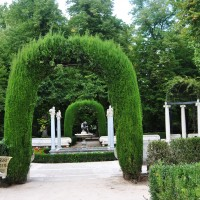
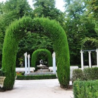

Aranjuez
 

Dirigidas a grupos pequeños que requieren un mimo especial, nuestras visitas privadas ofrecen lo mejor de nuestros servicios exclusivamente según tu elección. ¿Quieres hacerle un regalo especial a tu pareja? o, simplemente quieres una visita a tu ritmo con tu familia, amigos o un break después de las reuniones de trabajo en los hoteles de Aranjuez… Diseñamos la programación de la visita atendiendo a tus necesidades y gustos, haciendo hincapié en lo que más te guste: el rigor histórico, los mitos y leyendas, las anécdotas y rumores de la historia o en aspectos arquitectónicos y culturales. Contarás con nuestros guías expertos en distintas áreas de interés, utilizando materiales multi-media, láminas con ilustraciones, detalles y distinto material de apoyo.